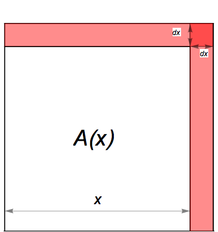

- (a)
- Compute \(\Delta A\), the change in area if the side increases by \(\Delta x=\d x\).
- (b)
- Compute \(\d A\), the differential of \(A\) at \(x\), and compare it to \(\Delta A\).
- (c)
- In the figure below the shaded part represents the change \(\Delta A\). Shade the part that
represents \(\d A\).
